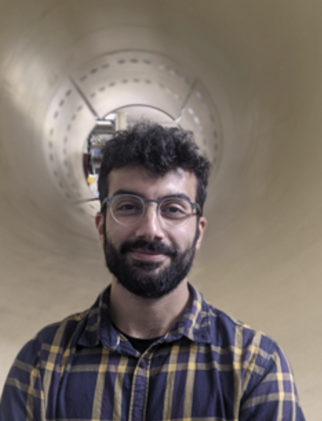
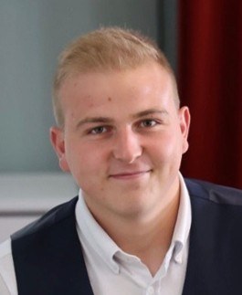
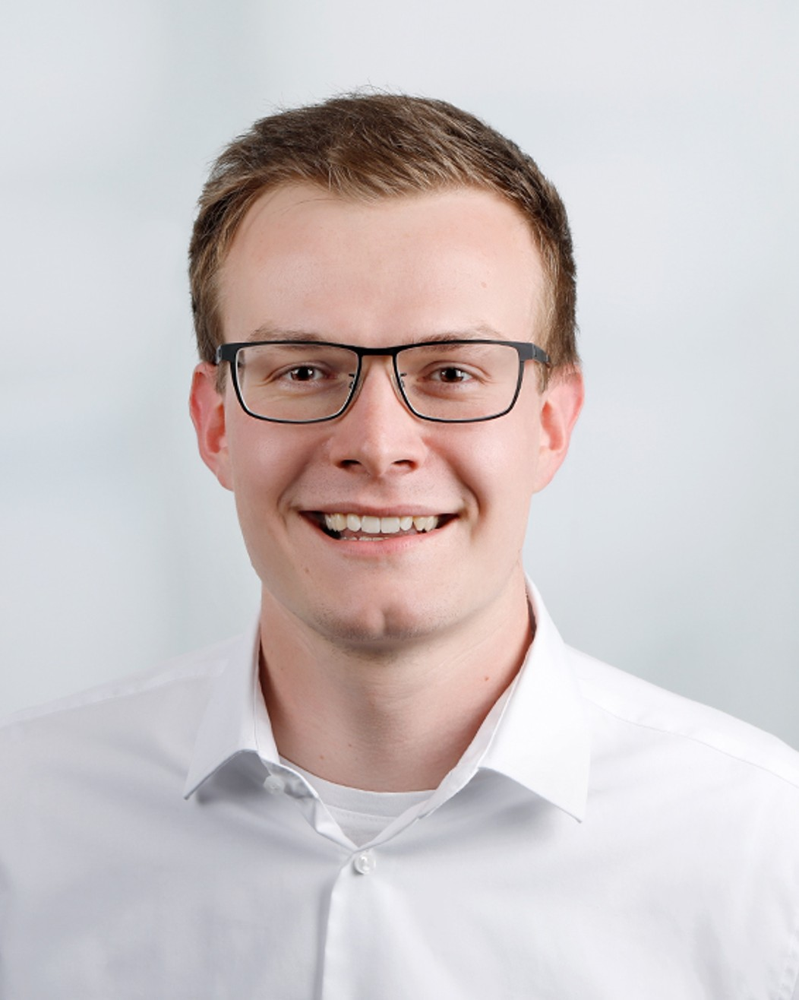
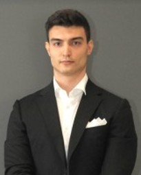
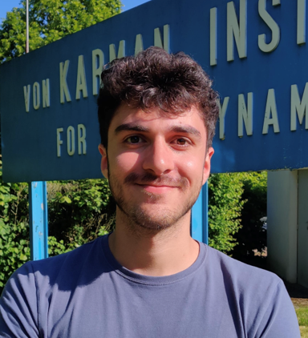
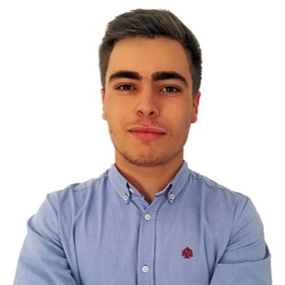
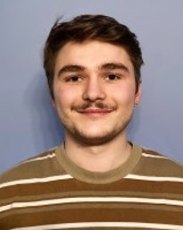

ML4F — Projects and Students
Most projects within ML4F are structured around the thesis work of students and early-career researchers, following three main tracks: PhD candidates (both in-house and visiting), postgraduate Research Master (RM) students, and participants in the Short Training Program (STP). RM and STP projects typically involve Master’s students from across Europe who join VKI for periods ranging from three to six months, often in the framework of Erasmus or equivalent exchange programs. All research is conducted at VKI and embedded in a broad network of European universities, research institutes, and laboratories.
The group’s activities are supported by a balanced mix of funding sources. Approximately 70% of our research is funded through competitive public grants, including Belgian funding schemes, European programs, and ERC support, while the remaining 30% comes from direct industrial collaborations. We actively welcome new partnerships with industry, particularly for projects involving experimental validation, real-time monitoring, digital twins, and control-oriented modeling of fluid systems.
PhD Students
Current PhD Students
-

Schena, L. (2022–ongoing)
Wind turbine control using machine learning.
PhD Thesis at Vrije Universiteit Brussel (VUB).
Co-supervised with Prof. J. Helsen. Supported by FWO. -

Rigutto, D. (2023–ongoing)
On the origin and control of localized defects in inertial wetting and dip coating.
PhD Thesis at Université libre de Bruxelles (ULB).
Co-supervised with Prof. B. Scheid. Supported by FRIA. -

Ratz, M. (2023–ongoing)
Development of URANS data assimilation for 3D velocimetry with application to low-Reynolds-number propellers.
PhD Thesis at Université libre de Bruxelles (ULB).
Co-supervised with Prof. A. Parente. Supported by FRIA. -

Zuchelli, U. (2023–ongoing)
Modelling and Control of Sloshing Phenomena for new Generation Space Mission. Ongoing PhD Thesis at ISAE-SUPAERO.
Co-supervised with Prof. Sanfedino and Prof. A. Urbano. Supported by OSSIP. -

Randino, S. (2024–ongoing)
Reinforcement twinning of floating wind turbines.
PhD Thesis at Université libre de Bruxelles (ULB).
Co-supervised with Prof. E. Garone. Supported by FRIA and ERC. -

Monteiro, F. (2024–ongoing)
Digital twinning and control for the thermal management of cryogenic tanks.
PhD Thesis at Universidad Carlos III de Madrid.
Supported by ERC and VLAIO Structural funds. -
Ahizi, S. (2024–ongoing)
Meshless CFD and reduced-order modeling of cryogenic sloshing in conformal tanks for hydrogen aviation.
PhD Thesis at at Université libre de Bruxelles (ULB).
Supported by ERC and VLAIO Structural funds. -
De Maria, T. (2024–ongoing)
Adaptive control of sloshing in partially filled tanks using semi-active baffles and reinforcement twinning.
PhD Thesis at at Université libre de Bruxelles (ULB).
Supported by ERC. -

Lecompte, Y. (2024–ongoing)
Reinforcement Twinning for Real-Time Control of Variable-Pitch Quadcopter Propulsion Systems.
PhD Thesis at Université libre de Bruxelles (ULB).
Supported by ERC.
Completed PhD Theses
Reconciling engineering models of ejectors with experiments and CFD using physics-informed machine learning.
PhD Thesis at Université catholique de Louvain (UCL).
Co-supervised with Prof. Y. Bartosiewicz. Supported by FRIA.
Thermo-fluid dynamics of cryogenic liquid storage: modelling and experiments.
PhD Thesis at Université libre de Bruxelles (ULB).
Co-supervised with Prof. B. Scheid and Dr. A. Simonini. Supported by FRIA and industrial projects.
Real-time optimisation of bio-inspired wings using the deformable overset method and machine learning, PhD Thesis at UGent, Ghent University, Belgium).
Co-supervised with Prof. J. Degroote. Supported by FWO.
Feedback Control of Liquid Metal Coating, PhD thesis at ULB, Université Libre de Bruxelles
Co-supervised with Prof. Benoit Scheid. Supported by FRIA and industrial projects.
Numerical models for the simulation of gas-liquid flows in the galvanization process, PhD Thesis at UDC, University of A Coruña, Spain, co-supervised with Prof. A. Gosset. Supported by industrial projects.
Thermal turbulence modelling for low Prandtl number fluid flows via data analysis and machine learning, PhD Thesis at UCL, Louvain University, Belgium.
Co-supervised with Dr. L. Koloszar and Prof. Y. Bartosiewicz. Supported by FRIA and industrial projects.
Gas-Liquid Interface Dynamics in Non-Isothermal Sloshing: Experimental Analysis and Simplified Modeling, PhD Thesis at KU Leuven University.
Co-supervised with Prof. D. Seveno and Prof. J. Steelant. Supported by FWO and industrial projects.
Visiting PhDs (Ongoing)
A single-shot formulation of multiscale POD via cross-structured spectral matrices.
PhD Candidate at Czech Technical University (CTU) in Prague, Czech Republic.
Co-supervised with Prof. Tomas Hyhlik.
Nonlinear System Identification of Variable-Pitch Propellers Using a Wiener Model.
PhD candidate at University of Defense, Brno, Czech Republic.
Co-supervised with Prof. Jakub Hnidka.
Sweep events characterization through LSTM networks.
PhD candidate at Politecnico di Torino, Italy.
Co-supervised with Prof. Michele Iovieno and Prof. Gaetano Maria Di Cicca.
Recovering Velocity Fields from Scattered Concentration Observa-tions in 2D, PhD candidate at Technical University of Darmstadt, Germany.
Co-supervised with Prof. Jeannette Hussong.
Former Visiting PhD Students
Scaling analysis and development of a demonstrator for Thermal Ventin Systems (TVS).
PhD Candidate at Monash Unversity, Australia.
Co-supervised with Prof. T. Hughes.
Geometry-Aware Surrogate Modeling of Impinging Gas Jet Flows with Graph Neural Networks.
PhD candidate at Universitá la Sapienza, Rome, Italy.
Co-supervised with Prof. Giovanni Delibra, Prof. Lorenzo Tieghi and Prof. Alessandro Corsini.
Experiments on sloshing mitigation using tuned oscillating baffles.
PhD candidate at Universidad Politécnica de Madrid, Spain.
Co-supervised with Prof. Pablo Salgado Sánchez.
Meshless Super-Resolution of Scattered Data via constrained RBFs and KNN-Driven Densification.
PhD candidate at Universidad Carlos III de Madrid (UC3M), Spain.
Co-supervised with Prof. Stefano Discetti and Prof. Andrea Ianiro.
Enhanced hybrid algorithm based on Bayesian optimization and Interior Point OPTimizer for constrained optimization PhD candidate at German Aerospace Center (DLR), Germany.
Co-supervised with Dr. Bähr, Martin.
Research Master (RM) Students
Current RM Students
- Marechal, O. (RM 2025–ongoing). Control and Reinforcement Twinning of Floating Wind Turbines Under Pitch and Roll Motion.
- Bukowski, K. (RM 2025–ongoing). Data-driven modeling and state estimation of sloshing dynamics from sparse measurements.
- Reviglio, D. (RM 2025–ongoing). Surface roughness effects on wetting failure and air entrainment in the inertial regime.
- Colonval, A. (RM 2025–ongoing). Real-time data-driven modeling of floating wind turbines.
Past RM Students
- Lecompte, Y. (RM 2024–2025). Reinforcement twinning for attitude control of multirotor drones: an experimental proof of concept.
- De Maria, T. (RM 2024–2025). Experimental characterization and model-based analysis of heat and mass transfer in non-isothermal vertical sloshing.
- Randino, S. (RM 2023–2024). Reinforcement twinning for self-learning models of wind turbine and wind farm control.
- Hubay, C. (RM 2023–2024). Multi-fidelity reduced-order modeling of wind loads on ships.
- Federico, F. (RM 2023–2024). Active thermodynamic control of cryogenic tanks.
- Kucuk, S. (RM 2023–2024). Probabilistic modeling of extreme weather events in the North Sea.
- Novi, A. (RM 2023–2024). Simulation of boiling phenomena in a cryogenic storage tank.
- Antonissen, R. (RM 2023–2024). Reinforcement twinning for variable pitch propellers.
- Ratz, M. (RM 2022–2023). Physics-constrained RBFs for data assimilation in image velocimetry.
- Rigutto, D. (RM 2022–2023). Experimental analysis of dynamic menisci in dip coating.
- Monteiro, F. (RM 2022–2023). Isothermal sloshing for space applications.
- Zucchelli, U. (RM 2022–2023). Thermal turbulence modeling at low Prandtl numbers.
- Schena, L. (RM 2021–2022). Control of wind turbines via machine learning techniques.
- Ahizi, S. (RM 2021–2022). Hybrid turbulence modelling using machine learning.
- Sperotto, P. (RM 2021–2022). A meshless method to compute pressure fields from 2D and 3D PIV/PTV.
- Calado, A. (RM 2021–2022). A robust CFD-driven model for flapping aerodynamics under different hovering kinematics.
- Gkimisis, L. (RM 2020–2021). Data-driven modeling for space debris degradation.
- Marques, P. (RM 2020–2021). Experimental characterization and modeling of non-isothermal sloshing.
- van den Berghe, J. (RM 2020–2021). Transient analysis of supersonic ejectors using 1D gas dynamics and deep learning.
- Sala, R. (RM 2020–2021). Nowcasting for wind turbines applications with a machine-learning approach.
- Ivanova, T. (RM 2020–2021). Physics-based and data-driven modelling of nonlinear waves in liquid films.
- Anfuso, E. (RM 2019–2020). An investigation of the dynamics of plasma jet flows using data-driven modal analysis.
- Kovalcsik, A. (RM 2019–2020). Experimental analysis of dynamic contact lines.
- Senman, O. (RM 2017–2018). Instantaneous PIV & PTV measurements in dusty highly-swirled flow.
- Scelzo, M. T. (RM 2015–2016). Flow control of confinement-driven oscillations.
- Adelchi, J. (RM 2015–2016). Wire coating.
Short Training Programme (STP) and Undergraduate Projects
The following students completed Short Training Programme (STP) under my supervision or co-supervision.
Short Training Program (STP)
- Mandeville, M. (STP 2025–ongoing). Toward efficient Galerkin projection in Lagrangian ROMs for sloshing.
- Bordin, F. (STP 2025–ongoing). Numerical simulations of transient effects during rapid pitching maneuvers for a variable-pitch propeller.
- Anastasi, L. (STP 2025–ongoing). Low-order dynamic modeling of variable-pitch propellers under rapid RPM and pitch transients.
- Anis, R. (STP 2025–ongoing). Advection-aware radial basis function regression for super-resolution of flow statistics in tracking velocimetry.
- Scuria Pio, V. (STP 2025–ongoing). Accelerating physics-constrained anisotropic RBF regression for fluid data assimilation.
- Belda, M. (STP 2025–ongoing). Dimensionality reduction as a tool for simulation validation.
- Gavras, D. (STP 2025–ongoing). Experimental investigation of motion control in semi-submersible floating wind turbine platforms.
- Hacha, A. (STP 2025–2026). Upgrades and instrumentation of the AMELIE facility at the von Karman Institute.
- Grasev, D. (STP 2024). Nonlinear system identification of variable-pitch propellers using a Wiener model.
- Lelievre, G. (STP 2024). Experimental characterization of de-stratification in cryogenic propellant tanks using a thermodynamic vent system.
- Bukowski, K. (STP 2024). Model-based sloshing control in rectangular tanks: coupling meshless particle methods with equivalent mechanical models through data assimilation.
- Reviglio, D. (STP 2024). Surface roughness effects on wetting failure and air entrainment in the inertial regime.
- Colonval, A. (STP 2024). Experimental characterization and data-driven modeling of the dynamic response of variable-pitch propellers.
- Cerbanaro, D. (STP 2024). Machine-learning modeling of high-pressure hydrogen leakages.
- Cravero, A. (STP 2024). Model-based and model-free control of a flapping-wing micro air vehicle.
- Castaldo, G. (STP 2024). Enhancement and calibration of an experimental test bench for real-time control and assimilation of a scaled model wind turbine.
- Baekelandt, O. (STP 2024). Development of a test bench for propeller characterization.
- Di Domenico, V. (STP 2024). Multi-fidelity training for data-driven thermal turbulence models.
- Gligor, D. (STP 2024). Experiments on multi-modal sloshing mitigation using tuned oscillating baffles.
- Venezia, B. M. (STP 2024). Numerical characterization of an ejector through RANS simulations.
- Werner, T. (STP 2024). Recovering velocity fields from scattered concentration observations in 2D.
- De Maria, T. (STP 2023). Numerical simulation and reduced-order modeling of propellant sloshing.
- Fracchia, E. (STP 2023). Machine-learning control of a liquid film over a moving substrate.
- Lecompte, Y. (STP 2023). Experimental investigation of the flow field in the bath of a hot-dip prototype using image velocimetry.
- Tani, A. (STP 2023). Comparison of primary nozzles for supersonic ejectors.
- Lowenstein, Y. (STP 2023). Modeling and simulation of impinging jets using CFD.
- Zumbo, A. (STP 2023). Thermodynamic modeling and data assimilation of cryogenic storage.
- Magnani, F. (STP 2023). Active flow control of coating undulations using deep reinforcement learning.
- Saccaggi, E. (STP 2022). Data-driven algebraic turbulent heat flux model (ANN).
- Randino, S. (STP 2022). Wind turbine control using machine learning.
- Bombardi, E. (STP 2022). CFD–multibody coupling for flapping drones.
- Barucca, M. (STP 2022). FSI solver for flexible flapping wings.
- Ferrigno, A. (STP 2022). Spectral methods for the BLEW solver.
- Monteiro, F. (STP 2022). Cryogenic non-isothermal sloshing.
- Federico, F. (STP 2022). Investigation of capillary-dominated flows: experimental and numerical analysis.
- Brandi, G. (STP 2022). Development and validation of an inverse method for heat transfer estimation in LRE-like cooling channels.
- Rigutto, D. (STP 2021). Scaling analysis of a galvanizing line.
- Gamba, G. (STP 2021). Finite-volume simulation of film instabilities.
- Delbeque, L. (STP 2021). Machine-learning and 1D modeling of supersonic ejectors.
- Fonsdituri, G. (STP 2021). ANN-based modeling of turbulent heat flux.
- Fiore, M. (STP 2021). Subcooled boiling in 3D-printed mini-channels.
- Scarponi, A. (STP 2021). In-space refueling modeling.
- Palmarini, A. (STP 2021). Electromagnetic wiping system for hot-dip coating.
- Ferreira, D. (STP 2021). Contact-angle influence in capillary flows.
- Giacopino, R. (STP 2021). Machine-learning control on liquid films.
- Stanciu, R. (STP 2021). CFD study of flapping wings with the deformable overset method.
- Baierl, C. (STP 2021). Investigation of linear and nonlinear sloshing regimes using free-surface tracking in an orbitally shaken cylinder.
- Merhaben, C. (STP 2020). Surrogate modeling for hypersonic re-entry.
- Conti, L. (STP 2020). Nonlinear wave propagation in Mach 3 jets.
- Deseau, J. (STP 2020). Feedback control of liquid sloshing.
- Desmet, M. (STP 2020). Reinforcement learning for active flow control.
- Marques, P. (STP 2020). Scaling and numerical analysis of non-isothermal sloshing for space propulsion.
- Ratz, M. (STP 2020). Experimental analysis of contact-line dynamics using optical techniques and inverse methods.
- Schena, L. (STP 2020). Implementation and comparative analysis of machine-learning methods for closed-loop control of fluid flows.
- Sperotto, P. (STP 2020). A meshless method to measure pressure fields from image velocimetry via radial basis functions.
- Bayer, J. (STP 2020). Inferring wall-pressure spectral models using neural networks.
- Spoto, F. (STP 2020). Implementation of constrained radial basis functions for PIV field regression.
- Kaufer, T. (STP 2019). Implementation of iterative multigrid and window deformation schemes in the OpenPIV Python package.
- Ninni, D. (STP 2019). Development of a software package for the integral modeling of the jet-wiping process.
- Da Luz Moreira, A. (STP 2019). Comparison between CFD and experimental results of the sloshing rising wave in a microgravity environment.
- Paoli, L. (STP 2018). Flow control of oscillating impinging jets.
- Mutafchiev, M. (STP 2017). Low-order modeling of numerical and experimental data.
- Barreiro, D. (STP 2017). URANS–VOF simulation of jet wiping.
- Zohreh, A. N. (STP 2017). 1D model of oscillating jets applied to wake meandering.
- Resende, D. (STP 2017). Time-resolved PIV facility for impinging jets.
- Zdybal, K. (STP 2016). POD/DMD decomposition of experimental and numerical data.
- Dumoulin, D. (STP 2016). Numerical analysis of oscillating impinging jets.
- Di Nardo, M. (STP 2016). Confinement-driven instabilities in jet flows.
- Scarpeccio, I. (STP 2015). Slot-jet impingement on flexible membranes.
- Németh, L. (STP 2015). Falling-film experiments.
- Biler, H. (STP 2014). Gas-jet impingement on liquid films.
- Martinez, H. A. (STP 2014). Experimental characterization of a turbulent plane jet.